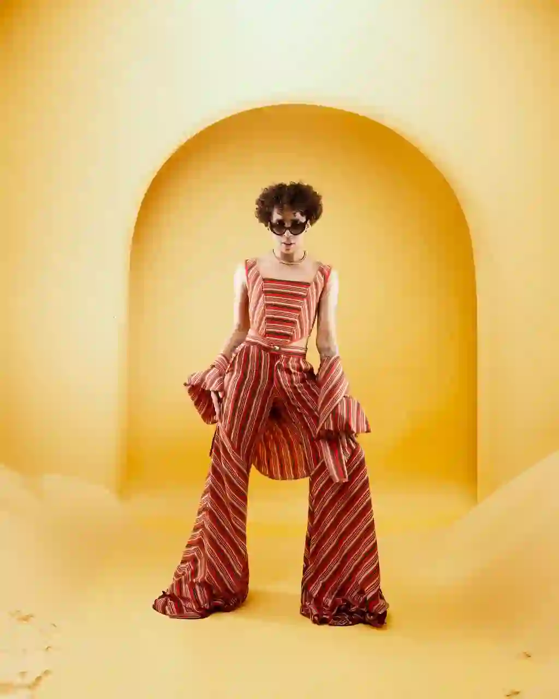
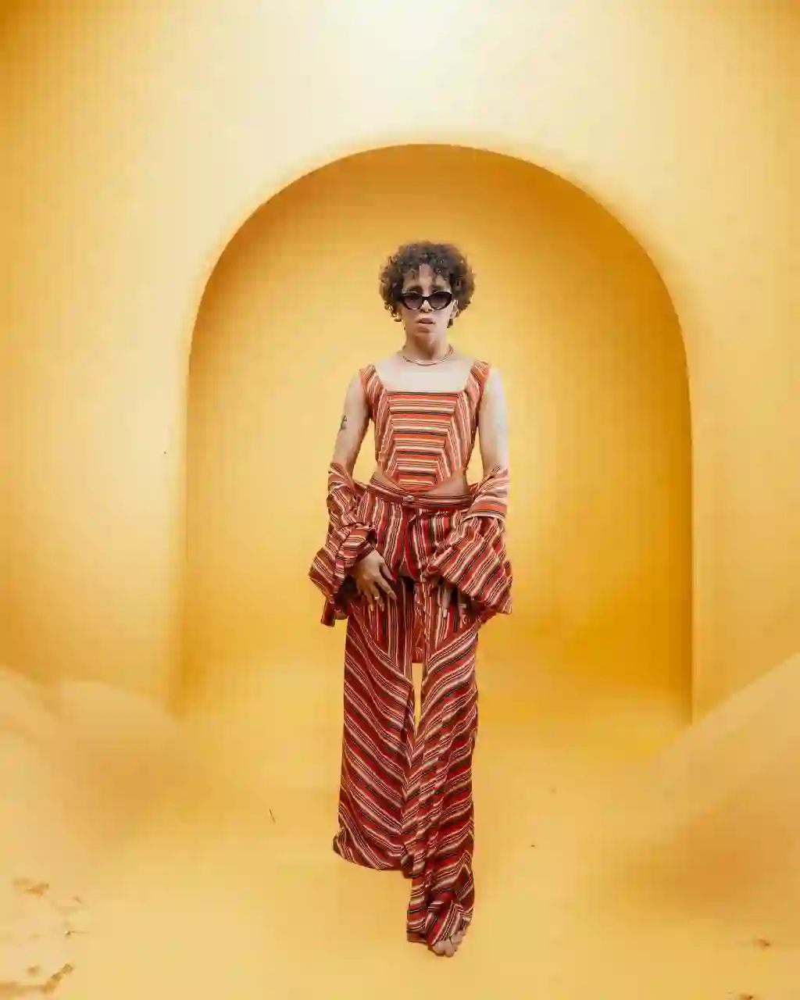
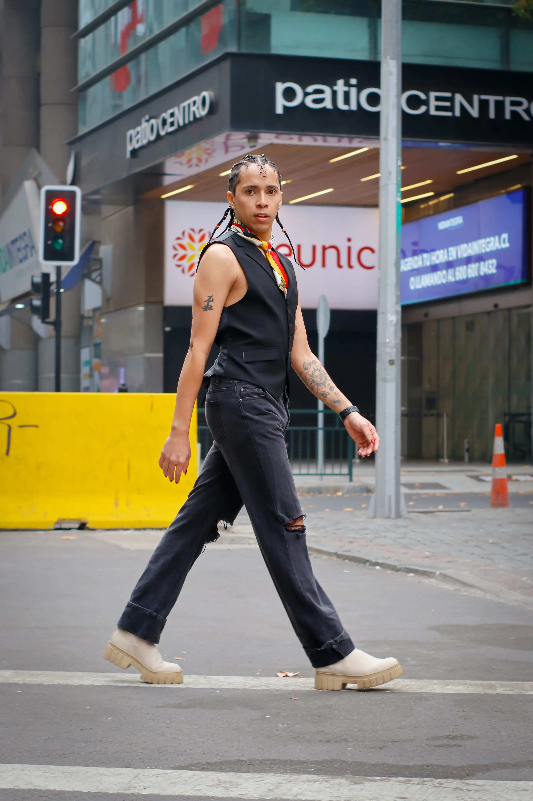
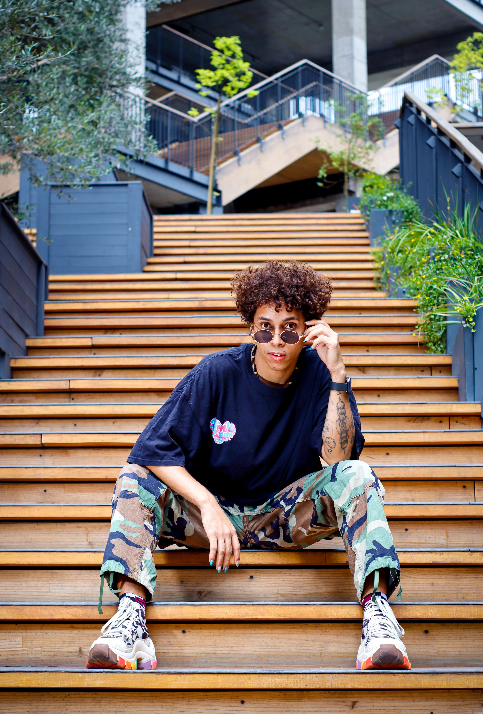

Sobre mí
Jhon Rojas
Mi esencia y estilo
Habilidades y versatilidad
Book
Selección de trabajo





Contacto
¿Colaboramos?
Estoy listo para colaborar en campañas que reflejen mi esencia y estilo.
email